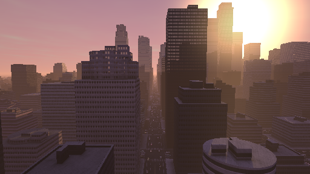
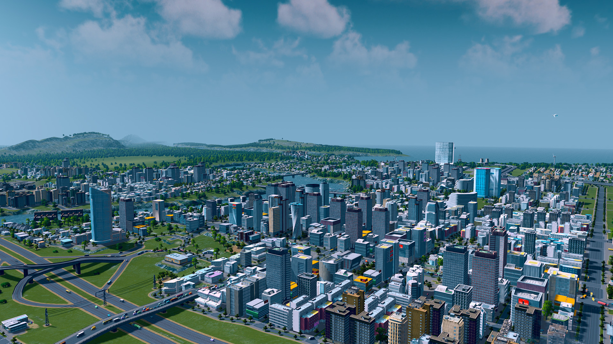

Shadertoy 是一个有着众多惊艳的shader实践的著名网站。 经常有人问如何在 4.js 里面使用那些shader。
重要的是要知道，被称作ShaderTOY 事出有因。 通常与其把 ShaderToy 里的shader当做最佳实践，不如称它们是有趣的挑战，比如：dwitter (代码少于140 个字符) 或js13kGames (用不多于13k代码制作游戏)。
使用Shadertoy 的难题是, 给特定位置的像素着色写函数从而绘制有趣的图像。这是一种有趣的挑战，很多的结果非常惊艳。但请注意，这并非最佳实践。

在我的GPU 上全屏运行，它的运行速度为每秒大约5帧。与《城市：天际线》这样的游戏形成鲜明对比。

这个游戏在同一台机器上每秒运行 30-60 帧，因为它使用更多 传统技术，建筑物由三角形绘制而成，并带有纹理，等等...
言归正传，让我们回到如何在4.js使用 Shadertoy的shader 。
当你在 shadertoy.com上点击“新建”,这是个初始的shader，至少 2019 年 1 月是这样的。
// By iq: https://www.shadertoy.com/user/iq
// license: Creative Commons Attribution-NonCommercial-ShareAlike 3.0 Unported License.
void mainImage( out vec4 fragColor, in vec2 fragCoord )
{
// Normalized pixel coordinates (from 0 to 1)
vec2 uv = fragCoord/iResolution.xy;
// Time varying pixel color
vec3 col = 0.5 + 0.5*cos(iTime+uv.xyx+vec3(0,2,4));
// Output to screen
fragColor = vec4(col,1.0);
}
关于shader你首要知道的重点是，他们是用一种叫做GLSL (Graphics Library Shading Language)的语言写成的，这是一种专为3D 数学设计的强类型语言。在上面我们看到vec4, vec2,vec3 这三种特定类型。 一个 vec2 有2个value, 一个 vec3
有3个value,一个vec4 有4个 values。他们的使用方法非常灵活。最常见的用法是使用 x, y, z, 以及w 例如：
vec4 v1 = vec4(1.0, 2.0, 3.0, 4.0); float v2 = v1.x + v1.y; // adds 1.0 + 2.0
与JavaScript不同，GLSL更像是C / C++，其中变量必须定义类型，所以不能写成这样var v = 1.2;
而是通过 float v = 1.2; 将 v 声明为浮点数。
详解 GLSL超出本文范畴。 概览GLSL可以点击本文 ，进阶可以查看 本系列。
注意，在2019 年 1 月, shadertoy.com 仅关注 fragment shaders. Fragment shader的职责在于，给定一个像素的位置，输出该像素颜色。
上面的代码我们看到 shader 有一个out 修饰的叫fragColor的参数。out 代表 output。这个参数向函数传递参数。我们需要将其设置为某种颜色。
它也有一个 叫 fragCoord的in (代表 input)参数。 这代表了将要绘制的像素坐标。基于坐标我们可以生成特定颜色。 如果canvas有 400x300 像素，那么函数将会被调用 400x300
次或者说是 120,000 次。 每次 fragCoord 都是一个不同的像素坐标。
还有 2 个正在使用但未在代码中定义的变量， 一是
iResolution。 该参数设置 canvas分辨率 。若该参数设置为
400x300 则 iResolution 是 400,300 。随着像素值
在400,300变化 uv 将在texture的纵横两个方向从 0.0 to 1.0 变化。 使用
规范化 值能简化工作，而且 shadertoy上大部分的
shaders也以类似方式开始。
shader中另一个未定义的参数是 iTime。 该参数代表页面加载后的秒数。
上面这俩全局变量在shader术语中被称为 uniform 变量。 之所以被称为 uniform 在于这些变量在shader的一次调用中保持uniform（统一），直到下一次shader调用。需要注意的是，这些参数都是在shadertoy定义的特定变量， 而非GLSL官方 变量。这俩变量是发明shadertoy的人定义的。
这篇 Shadertoy 文档中有更多定义。 现在让我们一起来写点代码来操作上面俩shader参数。
首先我们定义一个填充canvas的plane。 参考这篇关于背景的文章。 我们以这篇文章开始，不过要先删掉cube。代码很简单，如下：
function main() {
const canvas = document.querySelector('#c');
const renderer = new FOUR.WebGLRenderer({antialias: true, canvas});
renderer.autoClearColor = false;
const camera = new FOUR.OrthographicCamera(
-1, // left
1, // right
1, // top
-1, // bottom
-1, // near,
1, // far
);
const scene = new FOUR.Scene();
const plane = new FOUR.PlaneGeometry(2, 2);
const material = new FOUR.MeshBasicMaterial({
color: 'red',
});
scene.add(new FOUR.Mesh(plane, material));
function resizeRendererToDisplaySize(renderer) {
const canvas = renderer.domElement;
const width = canvas.clientWidth;
const height = canvas.clientHeight;
const needResize = canvas.width !== width || canvas.height !== height;
if (needResize) {
renderer.setSize(width, height, false);
}
return needResize;
}
function render() {
resizeRendererToDisplaySize(renderer);
renderer.render(scene, camera);
requestAnimationFrame(render);
}
requestAnimationFrame(render);
}
main();
正如关于背景的文章所解释，这些参数将定义
OrthographicCamera 以及一个大小是2个单位且被canvas填充的plane。
当前我们得到一个红色的canvas，因为我们使用的是红色
MeshBasicMaterial材质。
现在我们添加shadertoy shader。
const fragmentShader = `
#include <common>
uniform vec3 iResolution;
uniform float iTime;
// By iq: https://www.shadertoy.com/user/iq
// license: Creative Commons Attribution-NonCommercial-ShareAlike 3.0 Unported License.
void mainImage( out vec4 fragColor, in vec2 fragCoord )
{
// Normalized pixel coordinates (from 0 to 1)
vec2 uv = fragCoord/iResolution.xy;
// Time varying pixel color
vec3 col = 0.5 + 0.5*cos(iTime+uv.xyx+vec3(0,2,4));
// Output to screen
fragColor = vec4(col,1.0);
}
void main() {
mainImage(gl_FragColor, gl_FragCoord.xy);
}
`;
上面我们定义了刚刚提到的2个uniform变量，接下来我们关注从shadertoy里的shader GLSL代码。我们调用
mainImage ，同时传递
gl_FragColor 和 gl_FragCoord.xy。 gl_FragColor
是一个WebGL官方
全局变量，代表当前像素的颜色。gl_FragCoord 是另一个WebGL官方
全局变量，代表当前着色像素的坐标。
然后设置4.js uniforms，以便控制shader参数。
const uniforms = {
iTime: { value: 0 },
iResolution: { value: new FOUR.Vector3() },
};
在FOUR.js的每个uniform都有 value 参数。该参数必须与shader中的uniform类型匹配。
然后我们把fragmentshader和uniforms都传递给
ShaderMaterial。
-const material = new FOUR.MeshBasicMaterial({
- color: 'red',
-});
+const material = new FOUR.ShaderMaterial({
+ fragmentShader,
+ uniforms,
+});
在渲染前，需要先设置uniforms的值。
-function render() {
+function render(time) {
+ time *= 0.001; // convert to seconds
resizeRendererToDisplaySize(renderer);
+ const canvas = renderer.domElement;
+ uniforms.iResolution.value.set(canvas.width, canvas.height, 1);
+ uniforms.iTime.value = time;
renderer.render(scene, camera);
requestAnimationFrame(render);
}
注意： 不清楚为何
iResolution是个vec3,而且 shadertoy.com上的文档也没有说明第三个参数是啥，在上面没有用到第三个参数所以暂时设置为1。¯\_(ツ)_/¯
上面定义的新shader效果与我们在 Shadertoy上看到的匹配， 至少 2019 年 1 月是这样的 😉。这个shader做了些啥？
uv 从0变到1。cos(uv.xyx)得到3个cos值，以vec3形式输出，一个是uv.x的cos值, 一个是uv.y的cos值，最后是uv.x的cos值。cos(iTime+uv.xyx)形成动画。vec3(0,2,4)参数与cos(iTime+uv.xyx+vec3(0,2,4)) 求和使cos波偏移。cos 输出值范围从-1到1，所以经过0.5 * 0.5 + cos(...)从-1 <-> 1 变为 0.0 <-> 1.0为了更容易看出cos波形我们稍微调整一下代码。当前uv
仅能从0到1，因cos波形在2π处重复，我们通过将uv乘上40，实现cos波形从0到40的变化，这将会使cos波形重复大约6.3次。
-vec3 col = 0.5 + 0.5*cos(iTime+uv.xyx+vec3(0,2,4)); +vec3 col = 0.5 + 0.5*cos(iTime+uv.xyx*40.0+vec3(0,2,4));
如下我数了下大约是重复了6.3次，通过 +vec3(0,2,4)偏移了4因此我们能看到红蓝相间，否则我们将看到红蓝颜色混合为紫色。
了解到输入如此简单，当看到如 a city canal, a forest, a snail, a mushroom这些结果，让人更觉得充满挑战。幸运的是这也清晰的说明为何相对于传统的三角形构成的场景，这通常这不是正确的方式。因为每个像素颜色都需要经过许多数学计算，通常会导致运行缓慢。
有些shadertoy的shaders使用纹理贴图作为输入，比如这个。
// By Daedelus: https://www.shadertoy.com/user/Daedelus
// license: Creative Commons Attribution-NonCommercial-ShareAlike 3.0 Unported License.
#define TIMESCALE 0.25
#define TILES 8
#define COLOR 0.7, 1.6, 2.8
void mainImage( out vec4 fragColor, in vec2 fragCoord )
{
vec2 uv = fragCoord.xy / iResolution.xy;
uv.x *= iResolution.x / iResolution.y;
vec4 noise = texture2D(iChannel0, floor(uv * float(TILES)) / float(TILES));
float p = 1.0 - mod(noise.r + noise.g + noise.b + iTime * float(TIMESCALE), 1.0);
p = min(max(p * 3.0 - 1.8, 0.1), 2.0);
vec2 r = mod(uv * float(TILES), 1.0);
r = vec2(pow(r.x - 0.5, 2.0), pow(r.y - 0.5, 2.0));
p *= 1.0 - pow(min(1.0, 12.0 * dot(r, r)), 2.0);
fragColor = vec4(COLOR, 1.0) * p;
}
给shader传递纹理与给常规材质传递纹理一样，只不过需要通过uniforms来设置纹理。
首先需要给shader添加一个纹理的uniform。在GLSL中对应为
sampler2D 。
const fragmentShader = ` #include <common> uniform vec3 iResolution; uniform float iTime; +uniform sampler2D iChannel0; ...
然后我们可以像这里一样载入纹理，并且设置uniform的值。
+const loader = new FOUR.TextureLoader();
+const texture = loader.load('resources/images/bayer.png');
+texture.minFilter = FOUR.NearestFilter;
+texture.magFilter = FOUR.NearestFilter;
+texture.wrapS = FOUR.RepeatWrapping;
+texture.wrapT = FOUR.RepeatWrapping;
const uniforms = {
iTime: { value: 0 },
iResolution: { value: new FOUR.Vector3() },
+ iChannel0: { value: texture },
};
到目前为止，我们一直用Shadertoy.com上的方式使用 Shadertoy
shaders,即在canvas上绘制shader。但我们无需受限于此。请留意，通常人们在Shadertoy上写的函数仅输入一个fragCoord 和一个iResolution参数。fragCoord 不一定来自像素坐标，像纹理坐标也可以，然后就可以像常规的纹理一样使用。通常把这种通过函数生成纹理的技术叫做procedural texture。
让我们改一改上面的shader，最简单的莫过于使用4.js提供的纹理坐标，乘上iResolution再传到fragCoords。
我们需要加一个varying变量。varing变量通过对顶点进行插值（也叫varied）实现从vertex shader传值到fragment shader。在fragment
shader中使用之前需要先声明该变量。这个变量名中的 uv代表纹理坐标，前面的v代表varying。
...
+varying vec2 vUv;
void main() {
- mainImage(gl_FragColor, gl_FragCoord.xy);
+ mainImage(gl_FragColor, vUv * iResolution.xy);
}
然后我们需要实现vertex shader，下面是最简化的4.js的vertex shader。4.js中定义了uv，projectionMatrix，modelViewMatrix，和 position这几个参数，且可以传值给shader。
const vertexShader = `
varying vec2 vUv;
void main() {
vUv = uv;
gl_Position = projectionMatrix * modelViewMatrix * vec4( position, 1.0 );
}
`;
把vertexshader传给ShaderMaterial。
const material = new FOUR.ShaderMaterial({
vertexShader,
fragmentShader,
uniforms,
});
因为iResolution保持不变，因此可以在初始化时设定它的值。
const uniforms = {
iTime: { value: 0 },
- iResolution: { value: new FOUR.Vector3() },
+ iResolution: { value: new FOUR.Vector3(1, 1, 1) },
iChannel0: { value: texture },
};
在渲染时无需设置它的值。
-const canvas = renderer.domElement; -uniforms.iResolution.value.set(canvas.width, canvas.height, 1); uniforms.iTime.value = time;
另外我从关于响应能力的文章复制了一段3个旋转cube代码。效果如下：
希望这篇文字能说清在4.js使用shadertoy shader的入门方法。再次重申，大部分的shadertoy shaders与其说是性能方面的最佳实践，不如称它们是有趣的挑战（通过函数实现所有绘制）。尽管如此，他们还是有着令人印象深刻的惊艳和美，了解shader工作原理可以学到很多东西。